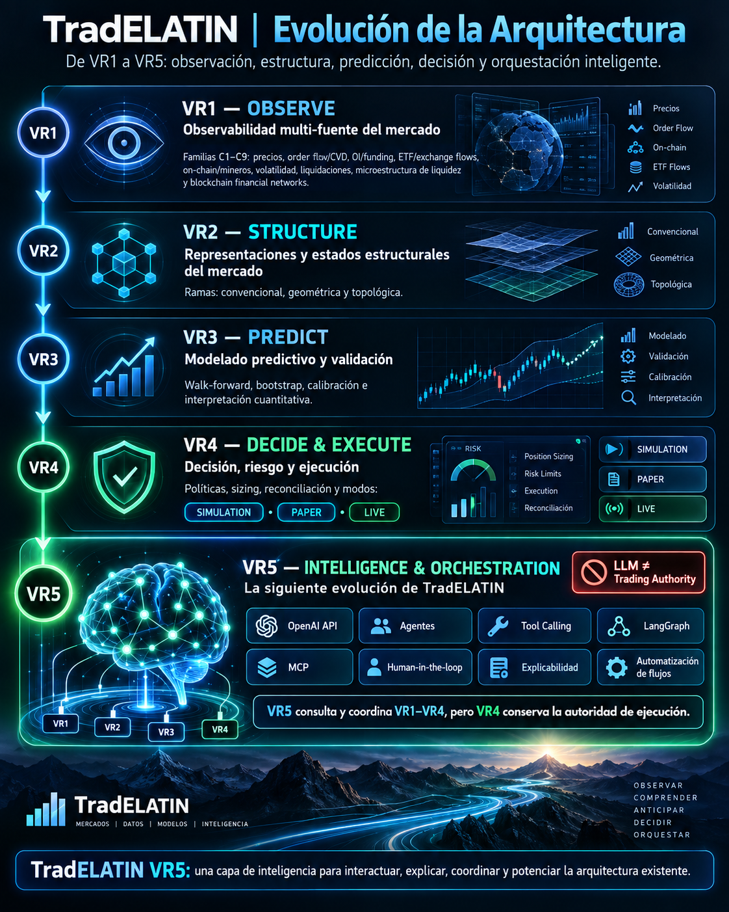

Interactive representation of structured financial observations.
TradELATIN · Financial Market Intelligence Architecture
Observe. Structure. Predict. Decide. Orchestrate.
TradELATIN is a modular financial-market intelligence architecture that transforms heterogeneous observations into structured representations, predictive information, risk-controlled decisions, and intelligent orchestration.
Five distinct responsibilities, with different maturity states. VR5 coordinates intelligence across VR1–VR4; VR4 retains execution authority.
Five roles · explicit authority
Evolution of the Architecture
VR1 observes. VR2 structures. VR3 predicts. VR4 decides and executes under explicit controls. VR5 interacts, explains and orchestrates.
VR5INTELLIGENCE & ORCHESTRATIONQueries · explanation · coordination · human supervision
VR1OBSERVEVersioned observationsVR2STRUCTUREStructural statesVR3PREDICTValidated predictive outputsVR4DECIDE & EXECUTERisk controls & execution authority
Functional pipeline: VR1 → VR2 → VR3 → VR4
VR5 interacts with every layer. Execution authorization and execution-state transitions remain in VR4.

VR1 · OBSERVE
Structured financial-market observation
C1–C8 Implemented
TradELATIN VR1 transforms heterogeneous market data into structured, synchronized, validated, and reproducible observations. C9 remains planned / in development.

External Market DataAcquisitionProcessing and ValidationVersioned ContractsRepresentation / HMI
Normalization, transformation, validation, and family-specific observation logic.
Acquisition connections and synthetic or replayable inputs for deterministic testing.
Versioned connections across acquisition, processing, contracts, and HMI.
- 33 logical endpoints in the existing C1–C8 architecture
- C1–C8 implemented and emulator/synthetic/replay validated
- C9 planned / in development
- Live acquisition paths (provider access required)
- Synthetic / Emulator Mode
- Processing
- Automated Validation
- Versioned JSON contracts
VR1 observes markets. It does not predict prices, generate trading signals, or execute trades.
VR2 · STRUCTURE
Mathematical representation of market structure
Conventional implemented
TradELATIN VR2 transforms synchronized VR1 observations into structural states and representations. CONVENTIONAL is the current implementation scope; GEOMETRIC and TOPOLOGICAL remain research and development branches.

VR1 ObservationsSynchronization and NormalizationMathematical Representation Φ(X)Structural DescriptorsRegimes and Transitions
Visual exploration of embeddings, topology, persistence, wavelets, and structural transitions.
Normalization, PCA/SVD, topology, persistent homology, entropy, distances, and multiscale transformations.
Versioned interfaces connecting VR1 contracts with VR2 transformations and research artifacts.
Fixtures, replay, reproducible datasets, perturbations, deterministic seeds and stability experiments belong to Processing / Integration.
The following candidate methods describe research scope, especially GEOMETRIC and TOPOLOGICAL; listing them does not assert support.
- PCA and SVD
- Topological Data Analysis
- Persistent homology
- Mapper
- Wavelet analysis
- Entropy and complexity
- Structural regimes
- Stability and sensitivity
VR2 studies mathematical structure. It does not predict prices, generate trading signals, or execute trades.
Explore VR2VR3 · PREDICT
Predictive modeling under temporal validation
Predictive component architecture
TradELATIN VR3 organizes deterministic predictive modeling, validation, walk-forward evaluation, calibration, uncertainty and interpretation into versioned component outputs. Release-specific validation evidence must be assessed independently of production readiness.

VR1 Observations + VR2 Structural RepresentationsFeature ConstructionTemporally Validated ModelsCalibrated PredictionsUncertainty and Explainability
Probabilities, horizons, calibration, uncertainty, explainability, and walk-forward performance.
Feature construction, training, inference, calibration, metrics, leakage controls, and versioned outputs.
Controlled connection of VR1 and VR2 inputs with versioned predictive models and supervised outputs.
Historical replay, fixtures, synthetic scenarios, regime shifts and out-of-sample evaluation belong to Processing / Integration.
- Feature construction
- Temporal validation
- Baseline models
- Probabilistic prediction
- Calibration
- Uncertainty
- Explainability
- Model stability
Prediction ≠ Execution Authorization. VR3 produces predictive information; it does not execute orders, hold trading authority or control brokers.
Explore VR3VR4 · DECIDE & EXECUTE
Risk-controlled decisions and execution
Component architecture · gated modes
TradELATIN VR4 owns decision policy, risk controls, sizing, order lifecycle and reconciliation. SIMULATION, PAPER and explicitly gated LIVE are execution modes within VR4; no deployment with real capital is claimed.

Validated VR3 OutputsDecision PolicyRisk and Authorization ControlsPosition SizingExecution PlanningPaper Trading and SimulationAudited Execution
Decisions, authorized signals, orders, positions, exposure, limits, alerts, traceability, and kill-switch supervision.
Decision policies, position sizing, portfolio constraints, risk evaluation, exposure control, and execution planning.
Controlled connection to execution adapters with permissions, reconciliation, idempotency, environment separation, and monitoring.
SIMULATION and PAPER cover commissions, spread, slippage, latency, partial fills and adverse scenarios. LIVE is separately authorized and gated.
- Decision policies
- Position sizing
- Risk limits
- Execution planning
- Paper trading
- Order lifecycle
- Auditability
- Kill switch
VR4 retains execution authority. LIVE requires explicit authorization, risk controls and deployment gates; no real-capital deployment is claimed.
Explore VR4VR5 · INTELLIGENCE & ORCHESTRATION
Intelligence for interaction, explanation, and coordination.
In developmentVR5 is an intelligence and orchestration layer that interacts with the existing TradELATIN architecture. It may consult, coordinate, explain, contextualize and orchestrate capabilities across VR1–VR4.
VR5 does not replace the observation, structure, prediction or controlled execution layers. Agent and workflow capabilities are architectural targets, not a claim of a deployed autonomous system.
Explore VR5
Modular by design
Architecture
The base functional pipeline is VR1 → VR2 → VR3 → VR4. VR5 queries and coordinates the four layers while VR4 retains execution authority.
VR5INTELLIGENCE & ORCHESTRATIONQueries · explanation · coordination · human supervision
Explore Architecture
VR1OBSERVEVersioned observationsVR2STRUCTUREStructural statesVR3PREDICTValidated predictive outputsVR4DECIDE & EXECUTERisk controls & execution authority
Functional pipeline: VR1 → VR2 → VR3 → VR4
VR5 interacts with every layer. Execution authorization and execution-state transitions remain in VR4.
Planned / In Development
C9
C9 — Blockchain Financial Networks
A network-agnostic observability framework for transforming blockchain-native activity into normalized financial observables.
C9 belongs to VR1 and does not replace C1–C8. After independent validation, its observables may support cross-family analysis, VR2 structural representation, VR3 predictive evaluation and VR4 controlled decisions, subject to independent validation and authorization.
Explore BlockchainNetwork DataEcosystem AdapterNormalized C9 ContractsFinancial Observables
Explicit maturity states
Roadmap
The roadmap distinguishes component engineering, research and expansion, development work and future capabilities. Common C9 development remains separate from ecosystem-specific proposals.
C1–C8
C9 Common Architecture
Ecosystem-Specific Integrations
Validated Network Adapters
Stellar and XRPL integrations are proposed and under preparation. The Stacks Getting Started Grant application has been submitted and is currently under review. No approval, funding, partnership, endorsement, operational integration, or completed Stacks implementation is claimed.
Explore RoadmapFounder
Dr. Ottmar Rafael Uriza Gosebruch
Mechatronics PhD · Algorithm Engineer · Researcher · Founder of TradELATIN
Ottmar Rafael Uriza Gosebruch is a Mexican mechatronics researcher and algorithm engineer with experience in signal processing, automation, control, robotics, data science, and real-time systems. He is the founder and lead developer of TradELATIN, an independent research and engineering program focused on financial observability, structural market representation, predictive modeling, and risk-controlled autonomous decision architectures.
- Location
- Mexico
- Focus
- Algorithms, automation, signal processing, data science, and financial-market infrastructure
- Role
- Founder and lead developer of TradELATIN